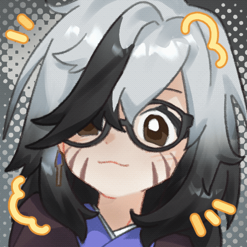
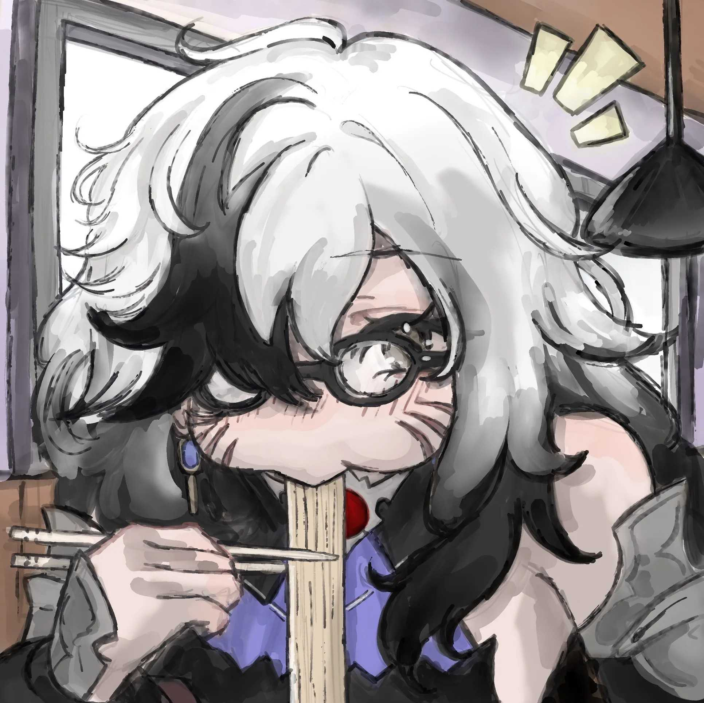

WER ICH BIN
Über Tishu
Ich bin Tishu und verbinde Streaming, Content Creation und mein Studium an der THA in der Region Augsburg. Bei mir treffen Anime, Gaming, Horror, Fantasy und Competitive Content auf eine Person, die auch gern über sich selbst lacht.


Was ich so mache
Ich streame Games, rede über Dinge, die mich begeistern, und nehme euch mit in meine kleinen digitalen Eskalationen. Mal taktisch, mal komplett lost, aber selten ohne Meinung.
Zwischen Anime-Rabbit-Holes, Horror, Fantasy und Competitive Grind entsteht Content mit Persönlichkeit. Wenn dabei ein Plan existiert, wurde er vermutlich gerade von mir selbst vergessen.